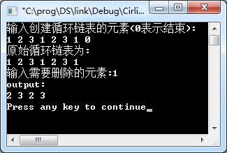
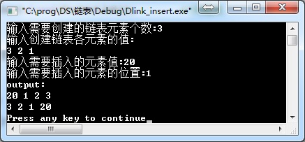
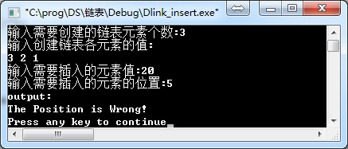
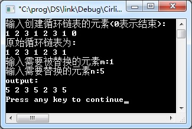
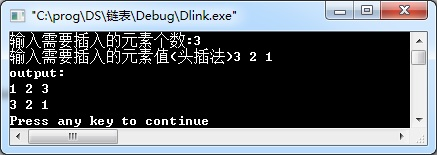
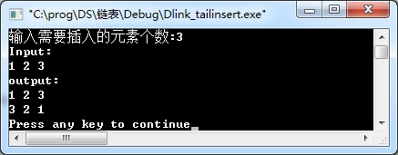
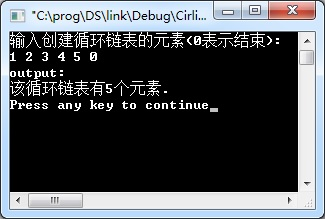

删除带头结点的循环链表中元素为m的结点。

该程序是带头结点双向链表的基本操作。完成Insert函数功能，该函数将数据data插入到双向链表的第pos个位置上。


将带头结点的循环链表中元素m替换为n。

该程序是带头结点双向链表的基本操作。完成HeadInsert函数功能，调用该函数一次，可以在该双向链表的最前面插入一个元素。

该程序是带头结点双向链表的基本操作。完成CreateTail函数，该函数使用尾插法创建双向链表。

删除带头结点非循环双向链表中值为x的所有结点。创建链表为尾插法，0表示创建链表结束。
图中第1行的3，第3行为键盘输入。
统计带头结点的循环链表中元素的个数。
